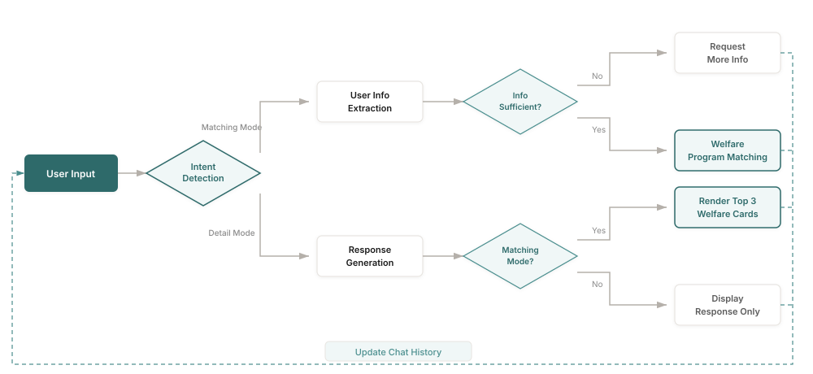

Welfare Compass
A conversational AI agent that helps Seoul citizens discover welfare benefits they're eligible for through natural dialogue. It started as a hackathon prototype and was rebuilt by a team of three as a LangGraph agent.

Phase 1 · Hackathon prototype
the problem
Seoul offers over 300 welfare programs for its citizens, yet a significant portion of eligible residents never receive the benefits they qualify for. The information is scattered across multiple platforms, buried in complex eligibility criteria, and written in bureaucratic language that's difficult to parse.
existing solutions fall shortPlatforms like Seoul Talk and Bokjiro simply list links without automatic condition matching. Users must manually check each policy's requirements.
information overloadWith 300+ policies, each with complex eligibility criteria involving age, income, employment status and residency requirements, citizens face decision paralysis.
Seoul Talk is a KakaoTalk chatbot: users pick a category and click through to links, with no automatic condition matching. Bokjiro, the government welfare portal, uses checkbox filtering, and users must judge their own eligibility.
van Oorschot's welfare non-take-up model identifies the first barrier as self-censorship: 86% of Seoul residents didn't apply because they assumed they weren't eligible. Welfare Compass targets this threshold stage.
user discovery
Before building anything, I conducted informal interviews with ~8 peers in my bootcamp cohort, all Seoul residents in their late 20s, the exact demographic eligible for youth welfare programs. They were proxy users, not real welfare applicants.
Most had never applied for welfare benefits. The reasons clustered around three patterns:
Informal interviews · n ≈ 8 · bootcamp cohort, late-20s, Seoul residents
Yujin, 27 · unemployed · single · renting in Seoul · lives alone
"I figured welfare was for low-income families. I never thought someone like me could qualify for anything."
Persona: a composite drawn from the interviews.
finding · "I didn't know I was eligible"Participants assumed welfare programs were for low-income households only, unaware that Seoul offers 300+ welfare programs, many of which target young adults.
design decision · proactive matchingUsers don't know what they qualify for, so the system extracts context through conversation and matches programs automatically, with no prior knowledge required.
finding · "I tried searching but gave up"Those who did search found information scattered across Seoul Talk, Bokjiro and district office websites with no unified entry point. Most gave up within minutes.
design decision · unified entry pointInstead of sending users across multiple platforms, we consolidated 52 hand-curated Seoul welfare programs into a single database the assistant matches against.
finding · "It's not worth the hassle"Even when participants found a potentially relevant program, complex eligibility criteria and lengthy application forms made the expected effort feel disproportionate to the uncertain benefit.
design decision · zero-effort interactionInstead of forms and filters, users describe their situation in natural language. The system handles eligibility matching and shows benefit details before any application commitment.
These findings converged on one insight: the barrier isn't information availability, it's the effort required to find and process it. This led us to choose a conversational interface that shifts the burden from user to system.
solution overview
Welfare Compass is a conversational AI agent that extracts user profile information through natural dialogue and matches it against a manually curated welfare policy database. For the hackathon, we built a hand-curated program set (52 curated programs in the MVP code) covering housing, employment, living expenses and education.
Instead of requiring users to fill out forms or navigate complex menus, they simply describe their situation: "I'm a 28-year-old freelancer living in Gangnam, looking for housing support." The system automatically extracts relevant attributes and finds matching welfare programs.

01 · natural language input with auto-extracted user profile

02 · personalised recommendations with program cards

03 · follow-up Q&A: eligibility check and application guide
Watch the hackathon demo video (YouTube) →
system architecture
The pipeline uses LangChain for orchestration. The key insight was that welfare policies are frequently updated, so we needed a system that could incorporate changes through data updates alone, without model retraining.
My part: Led ideation and built the initial prototype end to end: GPT-based profile extraction, rule-based matching and scoring over the 52 programs, FAISS FAQ retrieval, the prompts and the Streamlit app. A teammate later extended it for the finals submission, including BM25 + ensemble retrieval.
GPT first extracts the user's profile from the conversation. Rule-based filtering and scoring then matches that profile against the 52 curated programs. For follow-up questions, FAISS retrieves relevant entries from 362 FAQ entries. GPT then writes the response.
For the finals submission, a teammate added BM25 + ensemble retrieval.

Tech stack
- Python
- LangChain
- FAISS
- GPT API
- Streamlit
key challenges & solutions
challenge · inconsistent and hard-to-understand responsesEarly feedback indicated that responses lacked consistency and used technical welfare terminology that users couldn't understand.
solution · iterative prompt engineeringRedesigned prompts to ensure responses were grounded only in retrieved documents. Experimented extensively with converting bureaucratic language to everyday expressions. Tested against real user question patterns to refine response quality.
challenge · team alignment under time pressureAfter advancing to finals, team members wanted to build out backend/frontend infrastructure. With limited time remaining, this risked delivering an incomplete product.
solution · MVP-first with clear prioritisationAdvocated for "working MVP over perfect architecture." Built a Streamlit-based prototype overnight, demonstrated its viability to the team, and aligned everyone around completing a functional product rather than an ambitious but incomplete system.
results & feedback
"Good topic and planning. This seems like something citizens could actually use right away."
Hackathon judge panel
The project advanced to the finals, placing in the top 20 among 181 competing teams. Beyond the competition result, the judges specifically noted the practical applicability of the service.
Evaluation scope: a competition placement and judges' feedback. No retrieval benchmark or user study was run.
reflection
- User context matters more than technical sophistication. Understanding why people give up on welfare searches (complexity, self-doubt about eligibility) shaped every design decision.
- Updates through data, not retraining. Welfare policies change constantly. Keeping programs and FAQ entries as data meant policy updates could come from a refresh rather than retraining a model.
- Testing with proxy users has limits. Our interviewees were digitally fluent bootcamp peers. Real welfare applicants likely face different barriers around language complexity, trust and digital literacy.
what's next (as planned after the hackathon)
- Usability testing with real welfare applicants planned: partnering with community centres or welfare offices to observe how actual target users interact with the system, especially those with lower digital literacy.
- Retrieval optimisation partly addressed in phase 2: evaluating chunking strategies, reranking models and hybrid retrieval configurations. Phase 2 added BM25 + dense retrievers combined with weighted RRF, reused by the team's search server with BGE reranking.
- Full-stack architecture phase 2: moving from Streamlit to a Django + Next.js stack, widening coverage beyond Seoul youth, and integrating eligibility checks with welfare service APIs.
Phase 2 · Team version, LangGraph ReAct agent
A team rebuild of the hackathon prototype: a LangGraph ReAct agent for conversational policy guidance, rule-based eligibility checks, and user profiles that carry over between sessions (a teammate's signup feature).
context: why v2?
The hackathon result was encouraging, but it was clear that v1 had a fundamental design problem.
The MVP had no memory: every conversation started from zero. Age, income, employment status were all collected again through conversation. For a service meant to lower barriers to welfare access, requiring repetitive input was a friction we'd designed in.
v2 direction: user profiles with auto-matching (cross-session signup profiles are a teammate's feature), a LangGraph ReAct agent for dynamic query handling, and a full Django + Next.js stack, expanding from Seoul youth toward all citizens.
v2 architecture
The core shift from v1 to v2 is replacing a fixed sequential pipeline with a dynamic ReAct agent, and letting deterministic rules, not retrieval scores, decide eligibility.
| v1 · hackathon | v2 · team version | |
|---|---|---|
| architecture | Streamlit · fixed sequential pipeline | Django + Next.js · LangGraph ReAct agent |
| agent design | fixed steps, always executed in order | central orchestrator · tools selected dynamically per turn |
| LLM | GPT API | orchestrator GPT-4.1-mini (from Mar 2026) · extraction and query rewriting GPT-4o-mini |
| matching | rule-based filtering and scoring over the curated programs | search returns top-10 candidates; deterministic rules (age, income, region; no LLM) decide eligibility and rank the eligible ones with a rule-based score |
| search role | FAISS over 362 FAQ entries for follow-up questions | returns the top-10 candidate policies for the eligibility check |
| tool calls | — | duplicate tool calls removed after LangFuse trace review: 5 → 3 tool calls on a test query, ~31 s → ~26 s |
| user info | none, re-collected every session | conversation-extracted info stored per session in memory and injected into the system prompt each turn; cross-session signup profiles are a teammate's feature |
| data | 52 curated programs in the MVP code | 409 youth policies via the Youth Policy API (Mar 2026); 342 at initial indexing (Jan 2026) |
Remaining bottleneck: final response generation, 14.3 s of the ~26 s.
Key technical decisions
finding · fixed pipelines waste LLM calls on simple queriesA "hello" message in v1 still triggered the full extraction → matching → response sequence. The pipeline couldn't distinguish intent before committing resources.
decision 1 · ReAct agent over fixed pipelineThe LangGraph orchestrator reads the conversation and decides which tools to invoke, skipping extraction when there's nothing to extract, and skipping search when the query is a follow-up clarification.
finding · vector search with k=20 could miss qualifying policiesWith 342 policies in the DB at initial indexing (Jan 2026), a policy that qualifies but ranks semantically low (due to phrasing mismatch) would not appear in the top-20 results, and would be silently excluded from eligibility matching.
decision 2 · rules decide eligibility, not retrieval scoressearch_policies returns top-10 candidates; check_eligibility applies deterministic rules (age, income, region; no LLM) to those candidates and ranks the eligible ones with a rule-based score, not retrieval scores. The candidate limit remains a known limitation (see below).
finding · LLM module tightly coupled to Django ORMThe eligibility checker needed to query the database, but importing Django ORM directly into the LLM module created framework coupling, making the tool untestable without a live database.
decision 3 · factory pattern for dependency injectionI introduced create_check_eligibility(fetcher) to inject the data source for full-policy matching; that path was later removed as a 44 s latency bottleneck, so the injection now serves testing.
finding · a standalone rewrite tool got skippedA standalone rewrite tool relied on the orchestrator calling it before search, which it occasionally skipped.
decision 4 · query rewriting embedded in search_policiesEmbedding rewrite_query inside search_policies makes query optimisation run unconditionally whenever search is invoked, eliminating the coordination dependency.
finding · structured output kept failingThe orchestrator's responses often failed structured-output parsing.
decision 5 · switch the orchestrator modelSwitched the orchestrator to GPT-4.1-mini after a 17-turn, 5-persona test: responses that failed structured-output parsing dropped from 13/17 to 1/17 (single run).
My part, retrieval: built the retrieval components: a BM25 retriever with the Kiwi tokenizer, a Chroma dense retriever (OpenAI embeddings) and combined them with weighted RRF (0.4/0.6); the teammate's MCP search server reuses them with BGE reranking. Built the agent-side adapter that calls the MCP server.
Teammates' work: the MCP search server and its BGE reranking pipeline, the Django backend, the Next.js frontend and the map integration.
Tech stack
- backend
- Django 5
- DRF
- PostgreSQL
- Next.js
- AI / agent
- LangGraph ReAct
- GPT-4.1-mini
- GPT-4o-mini
- OpenAI embeddings
- search
- BM25 (Kiwi tokenizer)
- Chroma
- weighted RRF (0.4/0.6)
- BGE Reranker
- infra / dev
- MCP
- LangFuse
- Jira
status and roadmap (as of Mar 2026)
Done
- LangGraph ReAct agent with orchestrator prompt v2.2
- Tool architecture:
extract_info,search_policies,check_eligibility, withrewrite_queryembedded in search - Retrieval: BM25 + dense retrievers with weighted RRF (mine), reused by the MCP search server with BGE reranking (teammate); agent-side MCP adapter (mine)
- Rule-based eligibility check over the top-10 search candidates
- Two-track integration tests: real LLM + stub tools (28 tests) and real LLM + real tools (4), run manually
- Orchestrator switched to GPT-4.1-mini after a 17-turn, 5-persona test
- Duplicate tool calls removed after LangFuse trace review
- Backend API, DB migrations, Smart Seoul Map V5 integration (teammates); Next.js frontend base (teammate)
In progress as of Mar 2026
- Streaming responses
- Full user auth flow integration
- Map display in the chatbot (frontend rendering)
- Evaluation dataset and scoring loop
Planned
- Stage 0 welfare planned, not implemented: crisis-intent handling for users facing system entry barriers (no fixed address, no ID, emergency shelter needs), using a curated knowledge base separate from the policy DB.
- Admin dashboard and usage analytics planned
v2 challenges
challenge · field names didn't matchDifferent parts of the system used different names for the same concepts: district ↔ residence, and income_level ↔ income + income_raw. The agent's extracted profile and the eligibility rule schema silently disagreed. A teammate caught it in pull-request review.
solution · canonical schema plus alias mapsA canonical field schema in the tool specs, plus alias maps in code: policy field aliases, user-info labels, and needs normalisation.
challenge · slow answersA test query took about 31 seconds end to end.
solution · trace reviewAfter reviewing LangFuse traces I removed duplicate tool calls: 5 → 3 tool calls on a test query, ~31 s → ~26 s. The remaining bottleneck is final response generation (14.3 s of 26 s).
challenge · test coverage vs infrastructure constraintsFull integration tests (real LLM calls against real tools) are slow, expensive and sensitive to API latency. Running them all the time was impractical, but skipping them risked missing contract-level regressions between the orchestrator and its tools.
solution · two-track testingTwo-track integration tests I wrote: real LLM + stub tools (28 tests, integration_orchestrator), which checks orchestrator logic and tool-calling contracts without infrastructure cost, and real LLM + real tools (4 tests, integration_live). Both are run manually.
design goals
v1 demonstrated the concept was viable. v2 builds on it with specific design goals that address what the hackathon prototype couldn't.
- Zero re-entry. Users shouldn't have to repeat themselves. Cross-session signup profiles are a teammate's feature; my part is the in-session store: conversation-extracted user info is stored per session in memory and injected into the system prompt each turn, so the agent asks only for what is missing.
- No missed policies. The goal is for every policy a user qualifies for to surface, regardless of how they phrase their query. Today eligibility is decided by rules rather than retrieval scores, but only over the top-10 search candidates, so this goal is not yet met.
- Separation of concerns for reliability. Matching and search have different correctness requirements. Rules decide eligibility and rank the eligible policies; search only supplies candidates. Each part can be tested on its own.
- Room to grow. The intent is that the tool interfaces, the two-track tests and the MCP-based search server let the team add policies, citizen categories and query types without a redesign.
evaluation scope and limitations
- Correctness is checked by integration tests of the orchestrator and tools. There is no evaluation dataset or user study yet, so there are no claims about answer quality or matching accuracy.
- Candidates are limited to search top-10 and are passed between tools through LLM output.
- The latency figures come from one test query, and the model-switch figures from a single run, not a benchmark.
- The agent uses LangGraph's prebuilt ReAct agent rather than a custom graph.
- Phase 2 is a team project in development, not a finished service.
links
Live demo (phase 2) · Hackathon code (phase 1) · Hackathon demo video (YouTube)